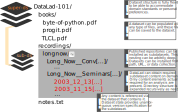
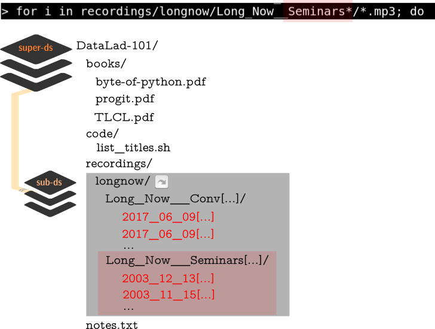

Reproducible and collaborative science with
DataLad
IMT Lucca, March 23rd-24th
Michael Hanke
 @eknahm
@eknahm |
Adina Wagner
@AdinaKrik |
|
Psychoinformatics lab,
Jülich Research Center and Heinrich-Heine-University, Düsseldorf |
Psychoinformatics lab,
Jülich Research Center
|
Slides: https://github.com/datalad-handbook/course/
Agenda
| Day 1 | Day 2 | |
| morning |
|
|
| afternoon |
|
|
DataLad Datasets
- DataLad's core data structure
- Dataset = A directory managed by DataLad
- Any directory of your computer can be managed by DataLad.
- Datasets can be created (from scratch) or installed
- Datasets can be nested: linked subdirectories
Local version control
Procedurally, version control is easy with DataLad!

Advice:
- Save meaningful units of change
- Attach helpful commit messages
Summary - Datasets and Local version control
datalad createcreates an empty dataset.- The -f/--force option creates a dataset in existing, non-empty directories
- A dataset has a history to track files and their modifications.
- Explore it with Git (git log) or external tools (e.g., tig).
datalad saverecords the dataset or file state to the history.- Concise commit messages should summarize the change for future you and others.
datalad statusreports the current state of the dataset.- A clean dataset status is good practice.
Consuming datasets
- Datasets are light-weight: Upon installation, only small files and meta data about file availability are retrieved.
- Content can be obtained on demand via
datalad get.
Dataset nesting

Summary - Dataset consumption & nesting
datalad cloneinstalls a dataset.- It can be installed “on its own”: Specify the source (url, path, ...) of the dataset, and an optional path for it to be installed to.
- Datasets can be installed as subdatasets within an existing dataset.
- The --dataset/-d option needs a path to the root of the superdataset.
- Only small files and metadata about file availability are present locally after an install.
- To retrieve actual file content of larger files,
datalad getdownloads large file content on demand. datalad statuscan report on total and retrieved repository size- using
--annexand--annex alloptions. - Datasets preserve their history.
- The superdataset records only the version state of the subdataset.
Reproducible data analysis

reproducible data analysis

for i in recordings/longnow/Long_Now__Seminars*/*.mp3; do
# get the filename
base=\$(basename "\$i");
# strip the extension
base=\${base%.mp3};
# date as yyyy-mm-dd
printf "\${base%%__*}\t" | tr '_' '-';
# name and title without underscores
printf "\${base#*__}\n" | tr '_' ' ';
done
⮊ A for loop in shell, will print each file name as
Date - Speaker - Title to the terminal.
⮊ Redirection to a file with > writes the stream to a file instead of the terminal.
⮊ Note: This could be any script or shell command!
A basic datalad run command

-
Wrapping any command* in a datalad run
will record the command's impact on the dataset to the history.
Run-records link dataset modifications to commands
commit f4a35c8841062eb58f65dbf3cde70ccdc3c9df68 (HEAD -> master)
Author: Adina Wagner adina.wagner@t-online.de
Date: Mon Nov 11 09:55:02 2019 +0100
[DATALAD RUNCMD] create a list of podcast titles
=== Do not change lines below ===
{
"chain": [],
"cmd": "bash code/list_titles.sh > recordings/podcasts.tsv",
"dsid": "02a84dae-faf5-11e9-ba9f-e86a64c8054c",
"exit": 0,
"extra_inputs": [],
"inputs": [],
"outputs": [],
"pwd": "."
}
^^^ Do not change lines above ^^^
diff --git a/recordings/podcasts.tsv b/recordings/podcasts.tsv
new file mode 100644
index 0000000..f691b53
--- /dev/null
+++ b/recordings/podcasts.tsv
@@ -0,0 +1,206 @@
+2003-11-15 Brian Eno The Long Now
+2003-12-13 Peter Schwartz The Art Of The Really Long View
+2004-01-10 George Dyson There s Plenty of Room at the Top Long term Thinking About Large scale Computing
[...]
It follows logically: If a command does not lead to any modification in a dataset, it will not be recorded!
Oh! An error in the code...
DataLad-101 layout:
Oh! An error in the code...
DataLad-101 layout:
datalad rerun

- Re-execute previous datalad run commands
- What shall be rerun can be specified via its commit hash:
datalad rerun -m "list podcast titles of both seminar series" f4a35c884106- ... but also via tag, revision specifications with
HEAD, ..., or by giving a range of commits.
Summary - Basic datalad run
datalad runrecords a commands impact on a dataset.- A record is only made if the command leads to dataset modifications
- The command captures provenance for humans and machines
- a machine-readable runrecord is automatically created, you need to provide a commit message.
datalad reruncan take any previousdatalad runcommit hash and re-execute it.- This saves you the need to remember!
datalad diffandgit diffare useful helpers to explore changes between version states of a dataset.
... but there is more that this command can do for you:
--input in datalad run

-
Files provided with the --input option are automatically retrieved
with datalad get, if necessary.
Content-locked files (vastly simplified)

- Files are given to Git-annex or Git
- Based on dataset configuration about file type, size, or name.
- Git-annex removes write permission from the file content it stores.
- This prevents accidental modifications.
datalad unlockcan unlock content for modification.datalad savewill lock content again.
--output in datalad run

-
Files provided with the --output option are automatically unlocked for
modification with datalad unlock, if necessary.
Summary - Reproducible execution with datalad run
datalad runrecords a commands impact on a dataset.- This usually requires a "clean" dataset status (no unsaved modifications)
- --input to the datalad run command gets retrieved (if necessary) prior to command execution.
- This is done with a datalad get in the background.
- --output to the datalad run command gets unlocked (if necessary) for modification prior to command execution.
- This is done with a datalad unlock in the background.
A classification analysis on the iris flower dataset


Reproducible execution & provenance capture
datalad run

Computational reproducibility
- Code may produce different results or fail in different software environments. The extension datalad-container helps!
- DataLad datasets can store (+ share) software environments (Docker or Singularity containers) and reproducibly execute code inside of the software container, capturing software as additional provenance

Link re-usable data resource units

$ datalad install --dataset . --source http://example.com/ds inputs/rawdata
$ git diff HEAD~1
diff --git a/.gitmodules b/.gitmodules
new file mode 100644
index 0000000..c3370ba
--- /dev/null
+++ b/.gitmodules
@@ -0,0 +1,3 @@
+[submodule "inputs/rawdata"]
+ path = inputs/rawdata
+ url = http://example.com/importantds
diff --git a/inputs/rawdata b/inputs/rawdata
new file mode 160000
index 0000000..fabf852
--- /dev/null
+++ b/inputs/rawdata
@@ -0,0 +1 @@
+Subproject commit fabf8521130a13986bd6493cb33a70e580ce8572
Modular data stewardship and curation

"actionable" links to subdatasets/files, seamless handling of dataset trees
Data provenance capture

$ datalad run -m "Perform eye movement event detection"\
--input 'inputs/raw_eyegaze/sub-*/beh/sub-*...tsv.gz' \
--output 'sub-*' \
bash code/compute_all.sh
-- Git commit -- Michael Hanke <michael.hanke@gmail.com>; Fri Sep 21 22:00:47 2018
[DATALAD RUNCMD] Perform eye movement event detection
=== Do not change lines below ===
{
"cmd": "bash code/compute_all.sh",
"dsid": "d2b4b72a-7c13-11e7-9f1f-a0369f7c647e",
"exit": 0,
"inputs": ["inputs/raw_eyegaze/sub-*/beh/sub-*_task-movie_run-*_....tsv.gz"],
"outputs": ["sub-*"],
"pwd": "."
}
^^^ Do not change lines above ^^^
---
sub-01/sub-01_task-movie_run-1_events.png | 2 +-
sub-01/sub-01_task-movie_run-1_events.tsv | 2 +-
...
"Complete" provenance capture
$ datalad containers-run -n nilearn \
--input 'inputs/mri_aligned/sub-*/in_bold3Tp2/sub-*_task-avmovie_run-*_bold*' \
--output 'sub-*/LC_timeseries_run-*.csv' \
"bash -c 'for sub in sub-*; do for run in run-1 ... run-8;
do python3 code/extract_lc_timeseries.py \$sub \$run; done; done'"
-- Git commit -- Michael Hanke <michael.hanke@gmail.com>; Fri Jul 6 11:02:28 2018
[DATALAD RUNCMD] singularity exec --bind {pwd} .datalad/e...
=== Do not change lines below ===
{
"cmd": "singularity exec --bind {pwd} .datalad/environments/nilearn.simg bash..",
"dsid": "92ea1faa-632a-11e8-af29-a0369f7c647e",
"exit": 0,
"inputs": [
"inputs/mri_aligned/sub-*/in_bold3Tp2/sub-*_task-avmovie_run-*_bold*",
".datalad/environments/nilearn.simg"
],
"outputs": ["sub-*/LC_timeseries_run-*.csv"],
"pwd": "."
}
^^^ Do not change lines above ^^^
---
sub-01/LC_timeseries_run-1.csv | 1 +
sub-01/LC_timeseries_run-2.csv | 1 +
...